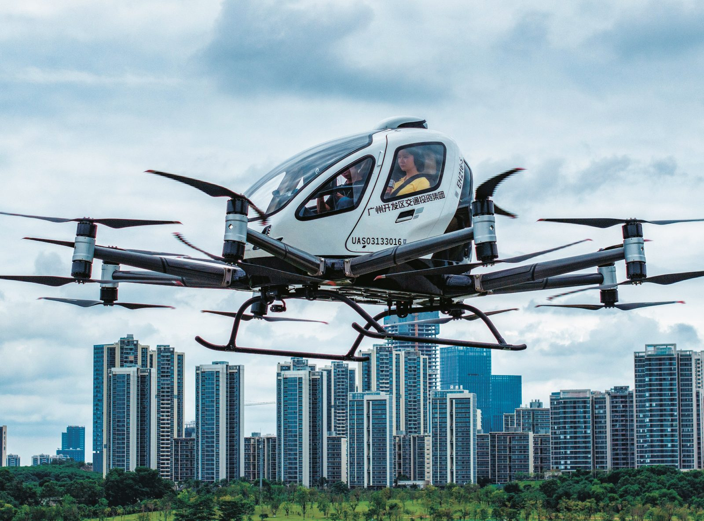
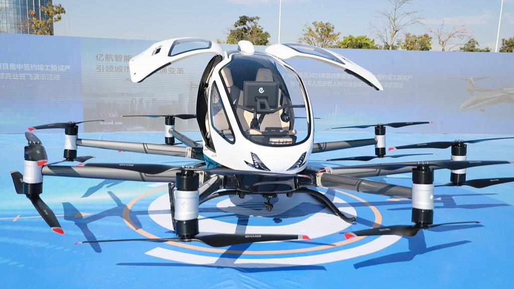
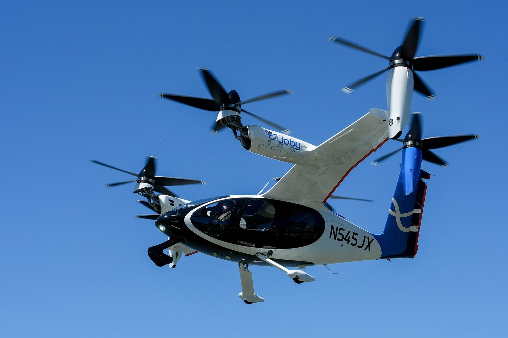
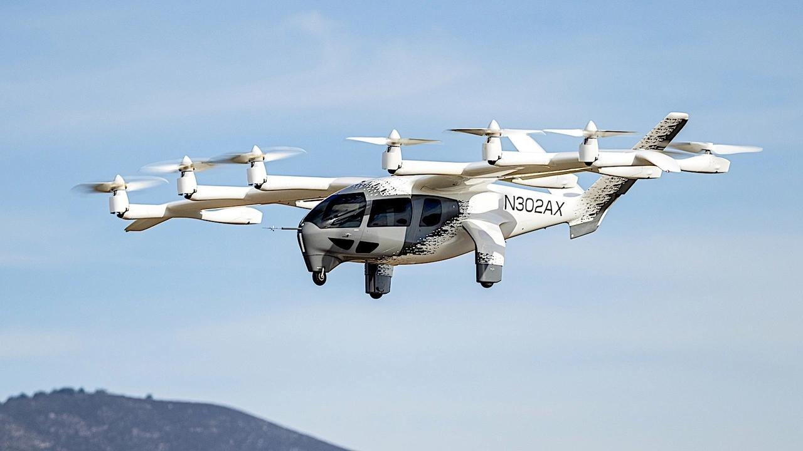

课程作业 · 某技术 / 产品全方位调研与分析
亿航智能 EH216-S：全球首个全链路取证的无人驾驶载人 eVTOL
EHang EH216-S: The First Type-Certified, Commercially Operated Pilotless Passenger eVTOL — Technical, Scenario, and Market Feasibility
研究对象： EHang EH216-S 无人驾驶电动垂直起降航空器课程： 飞行汽车技术基础证据截止： 2026-11-26版本： 1.0
130 km/h
最大设计速度 / Max speed
4 张
TC·AC·PC·OC 准入证 / Certificates
00
执行摘要 Executive Summary
EH216-S 是亿航智能（EHang, Nasdaq: EH）自主研发的无人驾驶载人电动垂直起降航空器（eVTOL），也是全球首款在中国民航局（CAAC）完成型号合格证（TC）、标准适航证（AC）、生产许可证（PC）与运营合格证（OC）全链路审定的载人 eVTOL。[1][3][5]
1. 定位要克制： EH216-S 当前是一款隔离空域内、预设航线、点对点短途 的无人驾驶载人航空器，不是可自由通勤、可跨城巡航的“空中私家车”。其 30 km 航程、25 分钟航时与 2 座布置，决定了它现阶段首先服务于低空文旅与观光体验，而非城市大规模通勤。
2. 技术可行分层判断： “演示飞行”已被数万架次实际运行验证；“工程化批量制造”在 PC 取证后初步成型；“开放空域大规模载人运输”仍受载荷航程、恶劣气象、低空智能驾驶与空管体系约束，尚未证明。
3. 安全是准入底线： 载人 eVTOL 把汽车与无人机的同源技术抬升到航空级安全（可靠性约 10⁻⁹ 量级、多套冗余飞控），必须按适航体系重构，不能直接复用车规级或消费级无人机的安全标准。
4. 市场是政策牵引下的早期细分市场： 当前商业化以 G 端示范项目与低空文旅 C 端体验为主，单车指导价约 239 万元人民币；真正的规模化城市通勤，要等待空域开放、基础设施补能网络、低成本运营与公众接受度同步成熟。
研究边界提示：官方披露只证明企业提出了某项指标或完成了某项演示；第三方报道用于交叉核验；论文与标准用于解释技术机理；本文所做的数量级判断均不冒充官方数据。
01
研究设计与证据边界 Method and Evidence
本文采用课程第四章所讲的“由浅入深、逐级检索”的调研方法：从 AI 工具、公开科普与公司产品页入门，到行业研究报告、适航专用条件、同行评审资料与监管文件交叉核验，再以工程证据视角评估技术与市场可行性。
来源类别 检索策略 在本文中的用途
企业官方 EHang 产品页、官网 About、SEC 财报披露 确认构型、参数、取证节点与运营进展 监管机构 CAAC 专用条件、TC/PC/AC/OC 公告 确认适航审定基础与合规边界 权威媒体 / 研究报告 新华社、人民日报、行业研报、低空经济白皮书 交叉核验架次、订单与市场规模口径 学术与标准 eVTOL / UAM 综述、适航与安全标准 解释动力、飞控冗余、SOTIF 与适航逻辑 对照企业 Joby、Archer 等海外 eVTOL 比较产品类别、构型与商业路径
This case assessment combines problem framing, source grading, evidence mapping, and engineering review. Public flight footage and press releases support the observation of demonstrated capability, but do not by themselves establish an open-airspace commercial transport case.
02
发展路径：从立项到全链路取证 Development Path
EH216 系列的取证过程是观察中国载人 eVTOL 工程化节奏的典型样本：从概念验证机到载人试飞，再到专用条件审定、三证齐全与商业运营，前后跨越十余年。[4][6]
2013
项目立项，开始概念设计
Project initiated, concept design
2014
研发工程验证机，部件测试，整机首次飞行成功
Engineering demonstrator; first integrated flight
2016
完成首次载人飞行测试
First crewed flight test
2021.01
CAAC 适航司受理 TC 审定项目（编号 NATC0102Q），为世界首个载人级无人驾驶航空器系统 TC 审定项目
TC application accepted by CAAC
2022.02
正式发布《亿航 EH216 型无人驾驶航空器系统专用条件》
Type certification special conditions issued
2023.08
完成全部试飞试验
All flight tests completed
2023.10.13
获得 CAAC 颁发的型号合格证（TC），全球首张载人无人驾驶 eVTOL 的 TC
Type Certificate issued
2023.12.21
获得标准适航证（AC），成为全球首款取得标准适航证的 eVTOL
Standard Airworthiness Certificate issued
2024.04
获得生产许可证（PC），进入规模化生产阶段（广东云浮量产基地）
Production Certificate issued
2025.03.28
运营航司获颁全国首批载人类无人驾驶航空器运营合格证（OC），开启付费商业载人服务
Air Operator Certificate issued; commercial passenger service begins
图 1. 展陈中的 EH216-S。公开资料显示其为全球首款“三证”齐全的载人 eVTOL；照片仅用于识别研究对象。
03
产品定义与基本参数 Product Definition
EH216-S 属于纯飞式（多旋翼、无机身道路行驶能力） 的无人驾驶载人 eVTOL，与课程中“两栖式 / 分体式 / 纯飞式”三形态划分相对应：它不具备地面行驶功能，定位为低空载人飞行器平台。同系列还衍生出消防型 EH216-F 与物流型 EH216-L。[3][7]
项目 参数 / 说明 证据状态
乘员 2 名乘员，机上无驾驶员与操纵装置，按预设航线全程自动飞行 专用条件 / 官方披露 动力布局 8 轴 8 对共轴双旋翼，16 套电机与螺旋桨；12 组动力电池供电 专用条件 飞控 三套独立飞行控制系统，传感器感知速度、高度、姿态、位置，配合投票机制 专用条件 / 官方 最大起飞重量 650 kg（专用条件口径）；产品页运营口径约 620 kg 口径差异需注明 最大飞行速度 130 km/h 专用条件 / 官方 飞行高度 200 m（AGL）；3000 m（MSL） 专用条件 最大航程 / 航时 30 km / 约 25 min；快充约 1 小时 专用条件 / 媒体核验 外形尺寸 约 5.63 m × 5.63 m × 1.86 m（高 1.93 m、宽 5.73 m 为产品页口径） 口径差异需注明 指导价 中国官方指导价约 239 万元人民币 / 架（2024 年 4 月起生效） 企业披露

图 2. 城市环境中的 EH216-S，采用多旋翼分布式电力推进布局。 图 3. 云南洱海喜洲—双廊跨海点对点飞行演示，车程约 60 分钟缩短至约 10 分钟。
04
系统架构与关键技术 Architecture and Technology
对照第五章“三大技术域 + 五大关键技术”的整车技术架构，EH216-S 的能力可拆解为构型总体、动力推进、安全飞行、智能驾驶与智慧管控五条主线。
构型总体与气动 Configuration & Aerodynamics
采用八臂十六桨的多旋翼构型，取消尾桨与大直径主旋翼，结构简单、垂直起降灵活，无需跑道；机身以碳纤维复合材料减重，滑橇式起落架保障平稳起降。多旋翼构型的代价是巡航效率与航程有限，更适合短途、低负荷场景。
动力推进 Propulsion
纯电动力，动力电池驱动分布式电机与螺旋桨，通过调节各旋翼差异转速实现姿态与航迹控制。对应第五章动力路线判断：纯电先行 ，主要服务短途低负荷场景；中长途高负荷场景仍需混动或远期氢能路线补位。
安全飞行与冗余 Safety & Redundancy
飞控、动力等关键部件多套备份；三套飞控加投票机制；内置 Fail-Safe 实时监测健康状态，智能判断续飞或就近应急降落；通信独立密钥加密，抵御入侵。这正是从车规级安全向航规级安全重构的核心环节。
智能驾驶与智慧管控 Autonomy & Traffic Management
预设航线 + 智能导航与 GNSS 定位实现点对点直飞；地面指挥调度系统集监测、调度、管理、预警、集群五大功能，与航空器实时数据交互。当前运行仍依托隔离空域与中心远程介入，尚未进入高密度混合空域自主运行。
技术可行性的三层判断 Feasibility in Three Layers
① 演示可行 Demonstrated
数万架次安全飞行、载人演示与点对点航线已在隔离空域完成；三证 + OC 说明设计、制造与运行达到现阶段审定可接受的安全水平。
② 工程化待验证 Engineering-unverified
批量一致性、电池循环寿命与充换电节奏、复杂气象（雷雨、大风、低能见度）适应性、噪声与公众接受度，仍需规模化运营数据持续验证。
③ 运输化未证明 Transport-unproven
开放空域、高密度混合交通下的无人驾驶通勤、城际载人运输，受航程载荷、空管体系与法规标准约束，尚未被证明可大规模商业复制。
对照第五章瓶颈判断：课程提出实用化门槛为载荷 ≥100 kg、航程 ≥100 km。EH216-S 2 座、30 km 的指标更接近“观光 / 接驳演示”区间，距离大众通勤所需的强实用性仍有明显差距。
05
安全、SOTIF 与适航路径 Safety, SOTIF and Airworthiness
载人飞行汽车最核心的挑战不是“能不能飞起来”，而是能否达到航空级安全。课程第四章列出的安全维度——主被动碰撞安全、电气与功能安全、预期功能安全（SOTIF）、信息安全与电磁兼容、安全与风险评估——在 eVTOL 上被整体抬升一个数量级。
安全维度 EH216-S 的对应设计 / 做法 仍需关注的开放问题
功能安全（FuSa） 三套独立飞控 + 投票机制；关键动力 / 飞控部件冗余备份，故障时备份无缝接管 冗余架构在全寿命周期内的可靠性验证与维修性数据 预期功能安全（SOTIF） 预设航线、隔离空域运行，降低复杂交互不确定性；传感器感知速度 / 高度 / 姿态 / 位置 低能见度、大风、强对流等极限 ODD 边界下的系统表现 电气安全 智能电池系统、独立密钥加密通信； Fail-Safe 应急就近降落 电池热失控防护、快充循环寿命与起火处置流程 信息安全 / EMC 独立密钥、加密数据链，抵御恶意入侵；指挥调度中心统一管控 面向网络攻击与电磁干扰的纵深防御与持续监测 适航审定 按 CAAC 专用条件完成 TC / AC / PC，OC 阶段审核运营主体持续安全运行能力 普适性国家与行业标准、运营维护规范仍在体系构建期
课程同时指出安全分析方法可借鉴民航与自动驾驶领域：故障树（FTA）、事件树（ETA）、共同原因分析（CCA）、贝叶斯网络（BBN）、HAZOP、FMEA、STPA 与 TARA 等，从整车、系统、硬件、软件多层级开展风险识别。
06
应用场景：双线并行的落地路径 Scenarios
第五章将应用场景概括为“专业化应用”与“大众化应用”双线并行。EH216-S 当前落点与第一、第二阶段高度对应：
第一阶段 · 低空文旅先行
城市观光 / 空中游览 / 飞行体验
以较低技术门槛和包容性政策快速积累用户信任与运营数据。当前广州穗港码头未来城、合肥骆岗中央公园等点位已开展低空游览、城市观光等付费载人服务。[5]
第二阶段 · 枢纽接驳升级
机场 / 枢纽分钟级立体接驳
连接机场、高铁站等核心枢纽，成为地面交通网络的关键补充；洱海点对点航线已展示跨水、跨地形短距连接的潜力。
专业化 · 行业效率
应急消防 / 特殊物流 / 医疗急救
系列化衍生：EH216-F 面向空中消防，EH216-L 面向空中物流；后续视法规与运行成熟度逐步开拓应急医疗等场景。[7]
远期 · 区域与城市成网
城际飞行与空地一体交通
在城市群间开展城际飞行，与地面公交、轨道协同；该阶段依赖航程升级、空域开放、起降网络与智能空管体系共同成熟，非当前机型可直接覆盖。
07
市场可行性与规模分析 Market Feasibility
宏观赛道： 低空经济被列为战略性新兴产业。据中国民航局预测，2025 年中国低空经济市场规模约 1.5 万亿元，2035 年有望突破 3.5 万亿元；截至 2025 年 11 月，国内 eVTOL 年度订单总额已超过 300 亿元。[8][9] 摩根士丹利预测 2030 年全球 eVTOL 市场中中国约占 30% 份额。[10]
市场要素 现状判断 支撑 / 制约
需求侧 文旅体验与示范观光需求先释放；通勤、物流、应急为潜在增量 早期付费意愿集中在高体验、高话题性场景 产品价格 EH216-S 指导价约 239 万元 / 架，属高价值装备 依赖 G 端示范采购与专业运营商，私人购买条件尚不成熟 商业模式 处于“产品服务耦合期”：主机厂销售 + 专业运营商按飞行时长 / 里程收费 向“基础设施 + 装备 + 全链条服务”生态运营演进仍需时间 产业链 中游整机集成初步成型；上游复材、高性能结构件，下游基建与监管配套偏弱 飞控软件、航电、操作系统是最核心短板之一 基础设施 初期复用通航机场、直升机起降点；起降场与充换电网络建设进度较慢 土地、资金、监管标准三重约束交织 监管环境 中国以“一事一议”专用条件实现全球率先突破，OC 体系初步建立 普适性适航标准、运营维护规范、低空空域规则仍在完善
结论：EH216-S 所处的市场是政策牵引、示范先行、低产量高话题性 的早期细分市场；其商业可行性在文旅与行业场景已被初步验证，但要成为城市大众通勤工具，仍需成本下降、航程提升、空域与基础设施同步成熟。
08
竞品比较 Comparison
选取海外两条代表性技术路线对照：美国 Joby 与 Archer 均采用倾转 / 复合翼思路，面向有人驾驶城市空中出租车（UAM），与 EH216-S 的纯多旋翼无人驾驶路线形成对照。

图 4. Joby Aviation 复合翼 eVTOL（资料图）。资料口径：约 4 名乘客 + 1 名驾驶员，航程约 160 km，最高时速约 320 km/h，处于适航认证冲刺阶段。 
图 5. Archer Midnight 复合翼 eVTOL（资料图）。定位城市空中出租车，与 Stellantis 合作量产，目标 2028 洛杉矶奥运场景示范。
维度 EHang EH216-S（中国） Joby（美国） Archer Midnight（美国）
构型 纯多旋翼，16 桨共轴双桨 复合翼 / 倾转过渡 复合翼，升力 + 推进旋翼 驾驶方式 无人驾驶，地面站远程监控 有人驾驶（4 客 + 1 驾） 有人驾驶为主 航程 / 速度 30 km / 130 km/h 约 160 km / 约 320 km/h（企业口径） 中短途城市区间（企业口径） 取证状态 TC + AC + PC + OC 全链路完成 适航认证推进中，尚未规模化商业营收 适航与量产准备阶段 当前场景 低空文旅、观光、行业示范 城市空中出租试点、军方合同 城市枢纽接驳、大型活动示范
The comparison shows two strategic bets: pilotless multirotor first in restricted airspace (EHang), versus piloted transition-wing aircraft targeting higher cruise efficiency and longer ranges (Joby, Archer).
09
工程化路线与挑战研判 Engineering Roadmap
对照第五章“封闭场景验证—开放空域示范—城市立体交通”三阶段推进逻辑，EH216-S 目前处于第一阶段成熟、向第二阶段过渡的位置。
阶段 目标 关键前提 EH216-S 当前状态
① 封闭场景验证 能飞、能管、能运营，验证产品安全与商业可行 隔离空域、专用条件、基础冗余安全设计 已基本完成 数万架次运行、三证 + OC② 开放空域示范 重点区域分级配置设施，开拓枢纽接驳与行业场景 空域分类管理、起降 / 补能设施、运营规范 进行中 多点位示范，标准与基建待完善③ 城市立体交通 成网运行，与地面公交 / 轨道协同，空地一体出行 智能空管、高密度混行安全、低成本量产、公众接受度 未到达 依赖技术与体系整体成熟
主要技术挑战 Technical Challenges
载荷航程瓶颈（电池能量密度、轻量化）；航规级安全冗余与可靠性；低空复杂气象与高密度飞行下的智能无人驾驶；低噪声设计。
主要体系挑战 Systemic Challenges
适航标准从个案走向通用规范；低空空域开放与跨域调度；起降场 / 充换电基础设施；保险、责任划分与人员资质管理。
10
课程延伸：本案例的方法论启示 Teaching Notes
1. 证据先于结论： 一个令人惊叹的飞行视频不能替代飞行包线、安全目标、监管路径与全寿命成本；调研时应区分“官方披露、第三方核验、机理解释、数量级估算”四类证据。
2. 技术同源 ≠ 体系等价： 新能源汽车三电与无人机飞控 / 航电经验可迁移，但载人航空必须在可靠性、冗余架构、功率密度与验证体系上按适航标准重构。
3. 场景牵引技术成熟度： 先封闭场景、后开放空域、再城市成网；应用场景与商业模式牵引技术供给，基础设施与法规标准创造可运行环境，三者螺旋上升。
4. 研究选题可继续深挖： 如 eVTOL 动力电池与能量密度、多旋翼气动与噪声、飞控冗余与 SOTIF、低空数字空管、起降场布局等，均可作为后续专题调研方向。
11
参考文献与资料来源 References
中国民用航空局. 《亿航 EH216-S 型无人驾驶航空器系统专用条件》（含基本参数与系统构型）.CAAC 适航司，2022-02. 链接
中国民用航空局. 亿航 EH216-S 型无人驾驶航空器系统专用条件（征求意见稿）.2021-12. 链接
亿航智能官网. EH216-S 产品页（构型、安全设计、参数口径）.ehang.com/cn/ehang216s
东方财富研报中心. 低空经济专题：eVTOL 星辰大海，低空经济方兴未艾（EH216-S 取证时间表）.2024-05. 链接
新华网. “空中的士”飞入现实（首批 OC、运营点位与性能核验）.2025-04-26. 链接
人民日报海外版. 未来城市低空交通跃向新高度（四张准入证、累计架次）.2025-11-11. 链接
EHang Holdings Limited. SEC Filing（EH216-S / F / L 系列、PC 与 OC 进展、季度交付）.ir.ehang.com
国家统计局 / 新华社. 逐空而上！低空经济加速启航万亿新赛道（市场规模与订单口径）.2025-12. 链接
中国经济网. “飞起来”的低空经济如何“强起来”？（2035 规模预测、运行识别要求）.2026-10-20. 链接
东方财富研报中心. 低空经济投资价值：载人 eVTOL 与工业级无人机商业化节奏与估值体系（赛迪顾问、摩根士丹利预测）.2026-08. 链接
课程讲义. 第四章《飞行汽车的现状及展望》、第五章《飞行汽车产业分析及支撑技术》（张玉新，吉林大学自动驾驶安全联合实验室）.
参考案例. The Flying Tesla Roadster — 技术、场景与市场可行性（课程样例网页，用于结构与证据分级方法参考）.lab.autozyx.com
免责声明：本网页为课程调研作业，产品参数以企业官方与 CAAC 公开文件为准；不同来源口径（如最大起飞重量、外形尺寸）存在差异处已在正文标注。图片仅用于识别研究对象与技术构型，不构成对产品商业表现的背书。